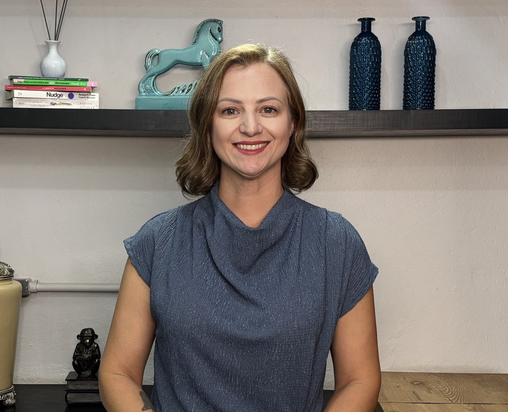
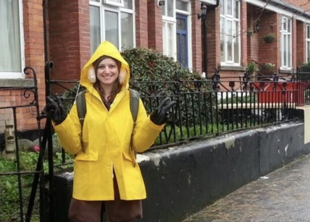
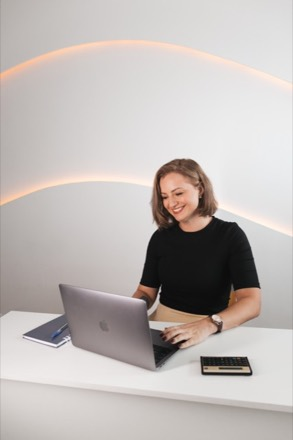

Construção com estratégia
As decisões mais importantes da vida raramente acontecem de repente. Elas começam muito antes, através de pequenas escolhas feitas ao longo do tempo.
Planejamento financeiro e consultoria em investimentos para quem deseja construir patrimônio com intenção, tomar decisões com mais segurança e usar o dinheiro para sustentar a vida que deseja viver.
Sou a Joice Sperandio,
planejadora financeira e consultora em
investimentos.
 CVM
Consultora de
CVM
Consultora de Visão
Patrimônio também é tempo, autonomia, possibilidades e tranquilidade para atravessar diferentes fases. O dinheiro é uma ferramenta importante, mas seu papel nunca foi ser o objetivo final.
Acredito que o dinheiro funciona melhor quando ocupa o lugar que deveria ocupar: o de sustentar escolhas, proteger projetos e ampliar possibilidades. É essa relação que procuro construir junto dos meus clientes todos os dias.

As decisões mais importantes da vida raramente acontecem de repente. Elas começam muito antes, através de pequenas escolhas feitas ao longo do tempo.
Entender o suficiente para participar das próprias decisões financeiras é mais importante do que saber tudo sobre investimentos ou mercado financeiro.
Construir patrimônio não significa acumular recursos sem direção, mas criar mais possibilidades, segurança e liberdade de escolha.
Dinheiro funciona melhor quando existe clareza sobre aquilo que ele precisa sustentar: projetos, prioridades, pessoas e futuros possíveis.
Serviços
Algumas pessoas precisam organizar e estruturar a base financeira antes de dar os próximos passos. Outras já possuem patrimônio e buscam mais clareza para investir e tomar decisões. Meu trabalho acontece principalmente nesses dois contextos.
Planejamento financeiro e consultoria em investimentos atendem necessidades distintas, mas compartilham o mesmo objetivo: oferecer direção, estratégia e segurança para as escolhas financeiras mais importantes.
01
Clareza para decidir. Estrutura para construir.
Ideal para quem deseja organizar a sua base financeira atual, estruturar metas de vida e construir mais previsibilidade para o futuro.
02
Segurança para investir. Autonomia para evoluir.
Ideal para quem já construiu patrimônio e busca otimizar, validar ou receber uma segunda opinião independente sobre a sua carteira de investimentos.
Processo
Mais importante do que encontrar respostas rápidas é construir boas perguntas e boas decisões ao longo do caminho. Cada projeto possui ritmos, prioridades e necessidades diferentes, mas existe um processo pensado para tornar a jornada mais clara e organizada.
A conversa inicial é simples, sem compromisso e existe para entendermos se faz sentido seguirmos em frente.
Agendar uma conversaTudo começa com uma conversa simples e sem compromisso. Um primeiro encontro para entendermos se faz sentido seguirmos em frente.
Agendar uma conversaHistórias
Nenhuma dessas histórias começou da mesma forma.
Mas todas começaram com uma conversa.

”
Durante muitos anos, por questões de saúde, eu simplesmente não pensava no futuro. Pós transplante, quando ganhei o “longo prazo”, precisei aprender a construir esse futuro pela primeira vez. A Joice me ajudou a transformar insegurança em planejamento: organizamos aposentadoria, investimentos, orçamento mensal e até o sonho da casa própria. O que mais marcou foi a forma acolhedora, prática e personalizada com que ela conduziu tudo. Hoje eu entendo meus números e consigo tomar decisões com muito mais tranquilidade.
Sobre
Trabalhei durante anos no mercado corporativo. Morei fora, viajei por diferentes países e vivi uma transição de carreira até encontrar meu verdadeiro propósito.
Hoje, são mais de seis anos de atuação como planejadora financeira e consultora em investimentos. São mais de 130 pessoas acompanhadas e a convicção de que maturidade financeira não significa saber tudo, mas entender o suficiente para decidir com segurança.
Vivência corporativa Atuei como analista financeira em uma indústria de plásticos por 7 anos
Experiência no exterior Morei em Dublin (Irlanda) por dois anos, trabalhando e estudando inglês.
Paixão por viajar Já conheci +17 países e sigo transformando experiências em aprendizados.
Transição de carreira Planejei cada passo até me consolidar como consultora e me dedicar 100% a essa atuação.
Maternidade & Família Ser mãe da Elisa e parceira do Gui ampliou meu olhar sobre tempo, segurança, autonomia e possibilidades.




CVM
Consultora de Dúvidas frequentes
Nem sempre é fácil saber por onde começar. Essas são algumas perguntas que costumo receber antes da conversa inicial. Talvez algumas delas também sejam as suas.